شريك العمرSHARIK ALOMR
البداية
قبل ما نبدأ
أهلًا بيك في دليلك
الدليل ده مش تقرير تقني. هو جولة سريعة بتشرح كل جزء في الموقع بلغة
بسيطة، ومع كل جزء لقطة شاشة من النسخة الحقيقية.
هدفنا إن العميل يفهم إيه اللي موجود، وإيه اللي بيعمله،
وإيه اللي جاي — من غير ما يحتاج خبرة تقنية.
محتويات الدليل
المنصة في سطر واحد03
رحلة المستخدم04
الصفحة الرئيسية05
الباقات والمحفظة06
المقالات والمحتوى07
الثقة والصفحات القانونية08
الدخول والتسجيل09
لوحة المستخدم10
الترشيحات والمحفظة11
الرسائل والملف الشخصي12
لوحة الإدارة13
إدارة المستخدمين والجودة14
الباقات والمدفوعات15
اللغة والوضع الداكن والموبايل16
كيف يعمل الموقع؟17
الأمان والخصوصية18
فين وصلنا؟ وإيه الجاي؟19
طريقة القراءة: ابدأ من الصفحة اللي تهمك. كل صفحة مستقلة،
وفي آخر الدليل قسم مبسط عن التقنية والأمان والخطوات القادمة.
إزاي تستخدم الدليل؟
ابدأ بالصورة الكبيرة
صفحة 3 بتلخص المنصة كلها في دقيقة واحدة.
شوف الشاشات
صفحات 5–16 فيها لقطات حقيقية لكل جزء في الموقع.
اعرف الجاي
صفحة 19 بتوضح الحالة الحالية والخطوات القادمة.
شريك العمرSHARIK ALOMR
نظرة عامة
الصورة الكبيرة
المنصة في سطر واحد
شريك العمر منصة زواج مصرية للتعارف الجاد: بترشيحات مدروسة،
وخصوصية حقيقية، وخطوات تحترم القيم.
عربي أولًا
تجربة كاملة بالعربية، مع تبديل فوري للإنجليزية في أي وقت.
خصوصية حقيقية
المستخدم بيحدد مين يشوف إيه، وإمتى — من غير مفاجآت.
خطوات محترمة
من التعارف للتواصل، كل مرحلة ليها قواعد واضحة ومعلنة.
اللي موجود في النسخة الحالية
موقع تعريفي كامل
باقات وأسعار
مقالات ومحتوى
تسجيل ودخول
لوحة مستخدم
لوحة إدارة
13صفحة ويب
2لغة: عربي / إنجليزي
2وضع: فاتح / داكن
34اختبار ناجح
الخلاصة: النسخة الحالية جاهزة تعرض المنصة، تستقبل مستخدمين،
وتدير المحتوى والجودة من لوحة تحكم كاملة.
”
الهدف مش أكبر عدد من الحسابات، الهدف تجربة محترمة تنتهي بزواج ناجح.
شريك العمرSHARIK ALOMR
رحلة المستخدم
من أول زيارة للتواصل
رحلة المستخدم
ست خطوات واضحة، كل واحدة بتبني ثقة وتسد خطوة من خطوات التردد.
1
يتعرّف
يفتح الصفحة الرئيسية ويشوف المنصة وقيمها وطريقة عملها.
2
يقرأ
يتصفح الباقات والمقالات وصفحات الثقة قبل أي تسجيل.
3
يسجّل
يدخل برقم الموبايل ورمز التحقق، أو بحساب Google.
4
يكمّل ملفه
يضيف بياناته واهتماماته ويحدد حدود الخصوصية.
5
يستكشف
يشوف ترشيحات مدروسة ويبدي اهتمامه بمن يناسبه.
6
يتواصل
المحادثة بتفتح بعد القبول المتبادل، وفي حدود واضحة.
وضوح
كل خطوة ليها هدف معلن، من غير مفاجآت أو خطوات مخفية.
أمان
بيانات المستخدم تحت تحكمه، ويقدر يحدد مين يشوفها.
تحكم
يقدر يكمّل أو يتوقف في أي وقت، من غير ضغط.
وفي كل خطوة: الإدارة متابعة الجودة والبلاغات، والمستخدم
عنده تحكم كامل في ظهوره وبياناته.
وفي نفس الوقت… الإدارة
مراجعة الملفات
التحقق من الطلبات والموافقة على الملفات المؤهلة.
متابعة البلاغات
الرد على أي سلوك غير مناسب وإجراء واضح.
ضبط الجودة
متابعة المؤشرات وتحسين التجربة باستمرار.
شريك العمرSHARIK ALOMR
الواجهة
أول انطباع
الصفحة الرئيسية
بتعرّف الزائر بالمنصة في نص دقيقة، وبتوجهه للخطوة المناسبة:
يقرأ، يشوف الباقات، أو يبدأ رحلته.
sharik-alomr.com
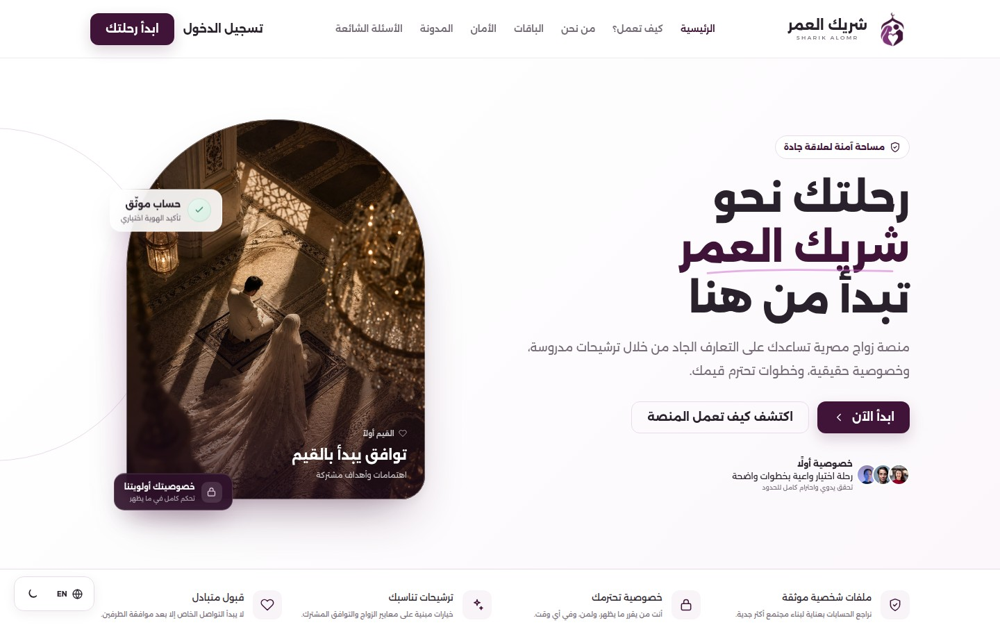
لقطة حقيقية — الصفحة الرئيسية على شاشة الكمبيوتر.
وعد واضح: عنوان رئيسي وزر «ابدأ رحلتك».
كيف تعمل: شرح مختصر في 3 خطوات.
الباقات: مقارنة سريعة قبل التسجيل.
الأسئلة الشائعة: إجابات تقلل التردد.
من نحن والأمان: ثقة قبل أي خطوة.
فوتر شامل: كل الصفحات المهمة في مكان واحد.
نفس الترتيب على الموبايل: الأقسام بتترتب تلقائيًا عشان
تفضل مفهومة وسهلة التصفح على أي شاشة.
شريك العمرSHARIK ALOMR
الباقات
قرار واضح
الباقات والمحفظة
أسعار واضحة، مقارنة سهلة، ومحفظة رصيد جوه حساب المستخدم —
من غير أي رسوم مخفية.
sharik-alomr.com/pricing
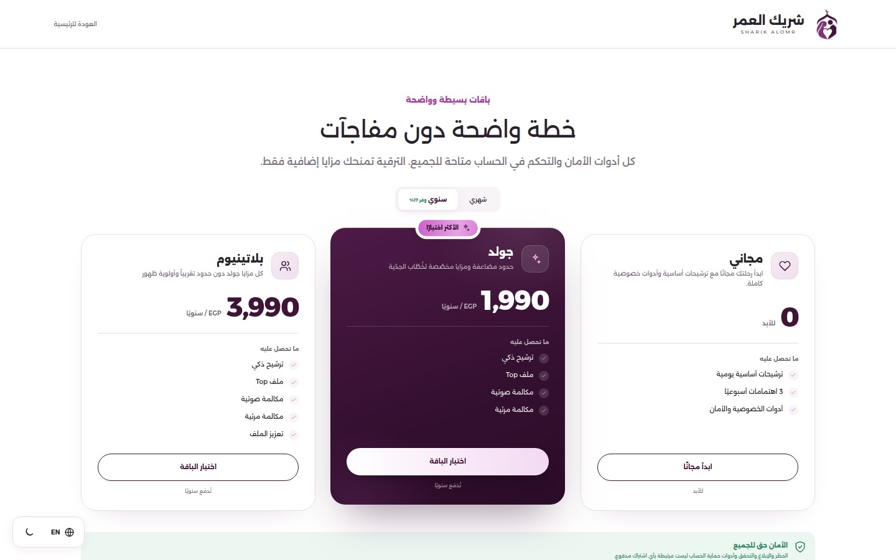
صفحة الباقات — الباقات والحزم والأسعار في مكان واحد.
باقات واضحة
اسم الباقة، سعرها، ومميزاتها قدام المستخدم من غير تفاصيل مخفية.
مقارنة سهلة
المستخدم يقدر يقارن المميزات ويختار الأنسب له بسرعة.
محفظة رصيد
شحن، رصيد، وحركة واضحة لكل عملية — جوه لوحة المستخدم.
تحكم إداري
الإدارة تقدر تعديل الأسعار والحزم من غير نشر نسخة جديدة.
الدفع: البنية جاهزة لربط Stripe أو Paymob. التفعيل النهائي
بيحتاج مفاتيح حساب الدفع الخاص بالعميل.
شريك العمرSHARIK ALOMR
المحتوى
قيمة قبل التسجيل
المقالات والمحتوى
محتوى بيساعد المستخدم ياخد قرار واثق، ويبني علاقة مع المنصة
قبل ما يسجّل.
sharik-alomr.com/articles
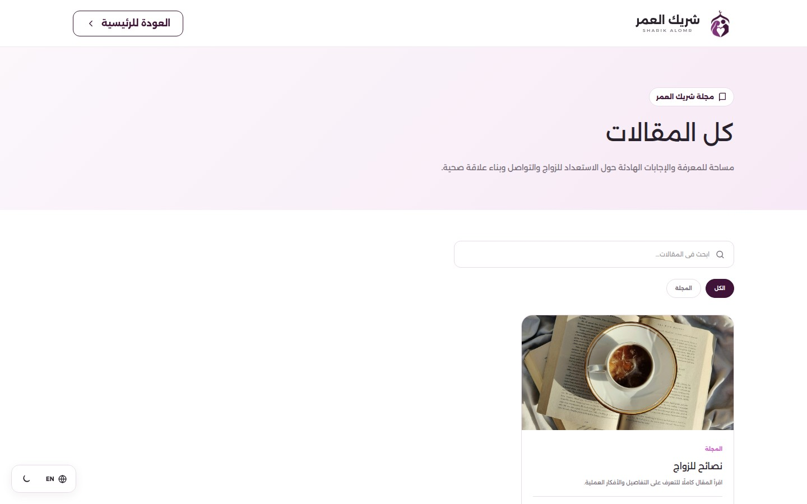
صفحة المقالات — تصفح، بحث، وتصنيفات.
sharik-alomr.com/articles/…
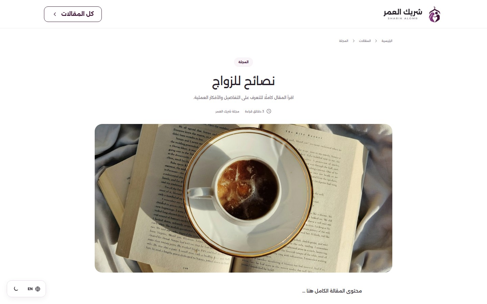
صفحة المقال — عنوان، محتوى كامل، ووقت قراءة.
تصفح وبحث: الوصول للمقال المناسب بسرعة.
تجربة قراءة: محتوى منسق ووقت قراءة واضح.
تفاعل: إعجاب، حفظ، وتعليقات.
إدارة: نشر وتعديل المحتوى من لوحة الإدارة.
شريك العمرSHARIK ALOMR
الثقة
شفافية من اليوم الأول
الثقة قبل أي خطوة
ست صفحات قانونية وتوعوية، مكتوبة بالعربي، ومتاحة من فوتر الموقع
في أي وقت.
sharik-alomr.com/legal/privacy
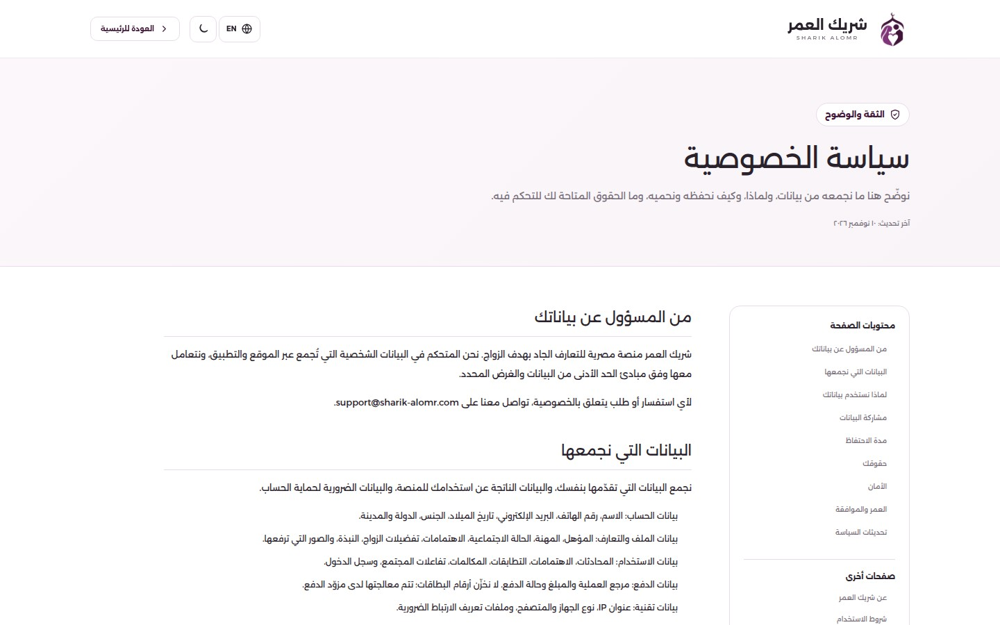
نموذج من الصفحات — سياسة الخصوصية بشكل واضح ومقروء.
عن المنصة
مين إحنا، وإيه اللي بنؤمن بيه.
الخصوصية
إيه البيانات اللي بنجمعها وإزاي بنحميها.
الشروط والأحكام
قواعد الاستخدام وحقوق الطرفين.
سياسة الاسترداد
شروط الاسترجاع بشكل واضح.
السلامة والإبلاغ
إزاي تبلغ عن أي سلوك غير مناسب.
ملفات الكوكيز
إيه اللي بنخزنه على جهازك وليه.
الخلاصة: الصفحات دي بتبني ثقة المستخدم، وبتحمي المنصة
قانونيًا، وبتخلي كل شيء معلن قبل التسجيل.
شريك العمرSHARIK ALOMR
الدخول
ثلاث طرق، نفس الأمان
الدخول والتسجيل
المستخدم يختار الطريقة الأنسب له: رمز تحقق على الموبايل، كلمة مرور،
أو حساب Google.
تسجيل الدخول
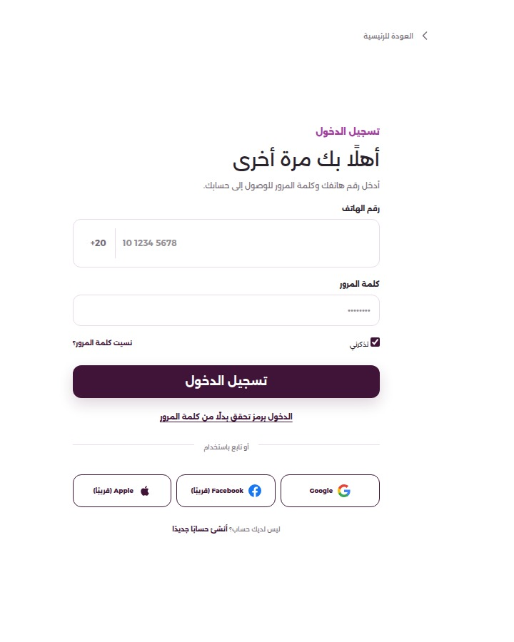
كلمة المرور — مع خيار «نسيت كلمة المرور».
رمز التحقق
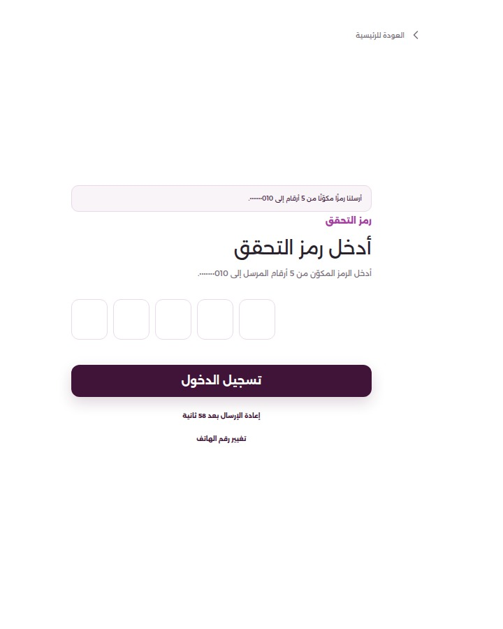
رمز التحقق OTP — 5 أرقام على الموبايل.
رقم الموبايل + OTP
الأسرع: من غير كلمة مرور، ورمز جديد كل مرة.
كلمة المرور
للمستخدم اللي بيفضل الطريقة التقليدية.
حساب Google
دخول بضغطة واحدة من غير بيانات إضافية.
وضوح كامل: Facebook وApple ظاهرين بوضوح كـ «قريبًا»،
عشان مفيش زر بيوعد بحاجة مش شغالة.
شريك العمرSHARIK ALOMR
تجربة المستخدم
مساحته الشخصية
لوحة المستخدم
مساحة واحدة بتجمع كل حاجة: الترشيحات، الاهتمامات، المحفظة،
الرسائل، والإعدادات.
sharik-alomr.com/dashboard/user
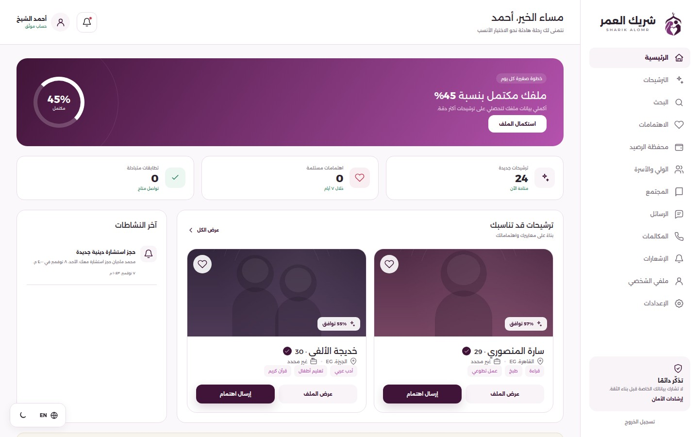
النظرة العامة — نسبة اكتمال الملف، الترشيحات، والاهتمامات.
نسبة اكتمال الملف: خطوة واضحة لتحسين الترشيحات.
ترشيحات جديدة: عدد محدث لحظيًا.
اهتمامات مستلمة: مين مهتم بيه.
تواصل متبادل: المحادثات بعد القبول.
آخر النشاطات: كل جديد في مكان واحد.
تحكم كامل: الخصوصية والإعدادات في متناوله.
شريك العمرSHARIK ALOMR
الترشيحات
مش عشوائية
الترشيحات والمحفظة
ترشيحات مبنية على معايير المستخدم: السن، المدينة، المؤهل،
والحالة الاجتماعية.
sharik-alomr.com/dashboard/user — الترشيحات
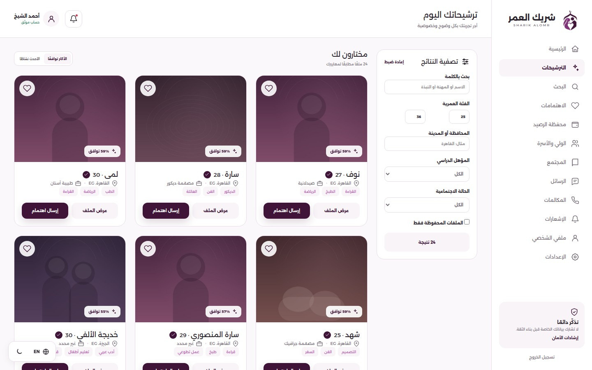
الترشيحات — فلاتر دقيقة ونسبة توافق لكل ملف.
sharik-alomr.com/dashboard/user — المحفظة
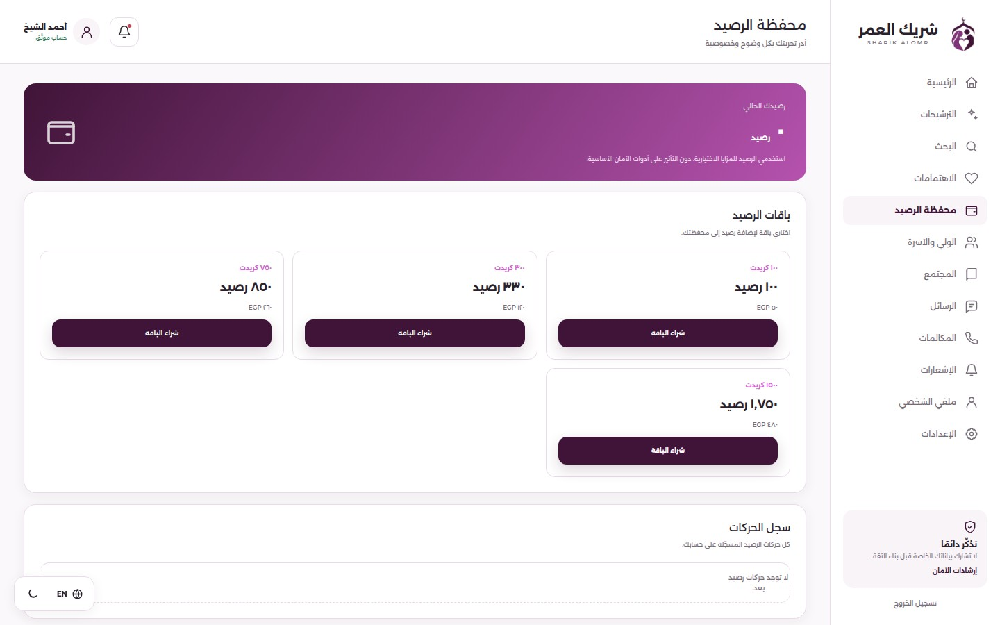
محفظة الرصيد — الرصيد وحركة كل عملية بشكل واضح.
فلاتر دقيقة: سن، مدينة، مؤهل، وحالة اجتماعية.
نسبة توافق: مؤشر يساعد على الاختيار.
إرسال اهتمام: خطوة واضحة وآمنة.
رصيد ومصاريف: كل حركة متسجلة.
شريك العمرSHARIK ALOMR
التواصل
بعد القبول المتبادل
الرسائل والملف الشخصي
التواصل مش مفتوح للكل: المحادثة بتبدأ بعد قبول الاهتمام المتبادل،
وفي حدود واضحة.
الرسائل
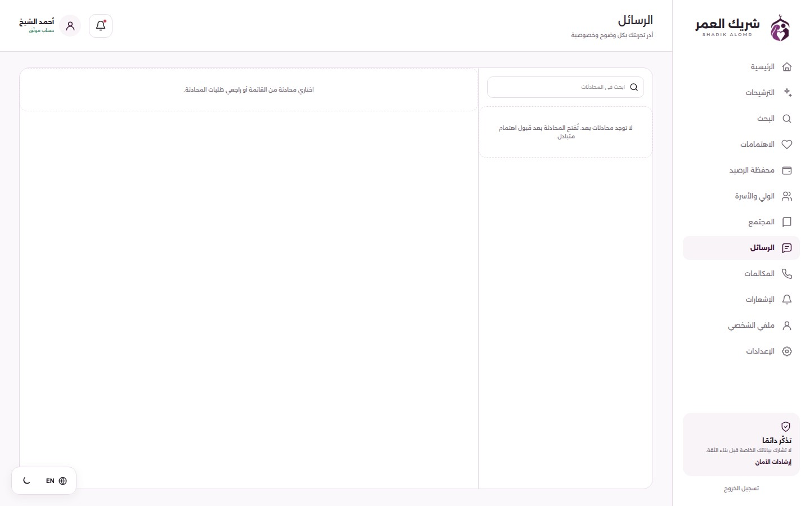
الرسائل — محادثات آمنة بعد القبول المتبادل.
ملفي الشخصي
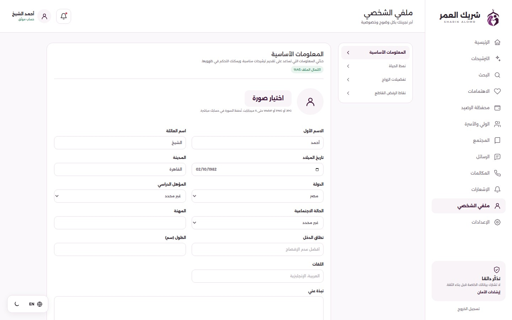
الملف الشخصي — بيانات واهتمامات ونسبة اكتمال.
محادثات آمنة: تفتح بعد قبول الطرفين.
بحث داخل المحادثات: الوصول السريع.
ملف مكتمل: نسبة الاكتمال بتزيد فرص التوافق.
تحكم في الظهور: المستخدم يحدد مين يشوف إيه.
فلسفة المنصة: خطوات محترمة وحدود واضحة — التواصل حق
مكتسب، مش متاح للجميع من أول لحظة.
إزاي تبدأ محادثة؟
1. قبول متبادل
الطرفان لازم يقبلوا الاهتمام قبل فتح المحادثة.
2. محادثة آمنة
المحادثة بتفتح جوه المنصة، من غير مشاركة بيانات تواصل.
3. تواصل محترم
قواعد واضحة، وإبلاغ سهل لو حصل أي تجاوز.
شريك العمرSHARIK ALOMR
الإدارة
غرفة التحكم
لوحة الإدارة
كل ما يخص المنصة في لوحة واحدة: المستخدمون، الجودة، المحتوى،
والمال — بصلاحيات دقيقة لكل أدمن.
sharik-alomr.com/dashboard/admin
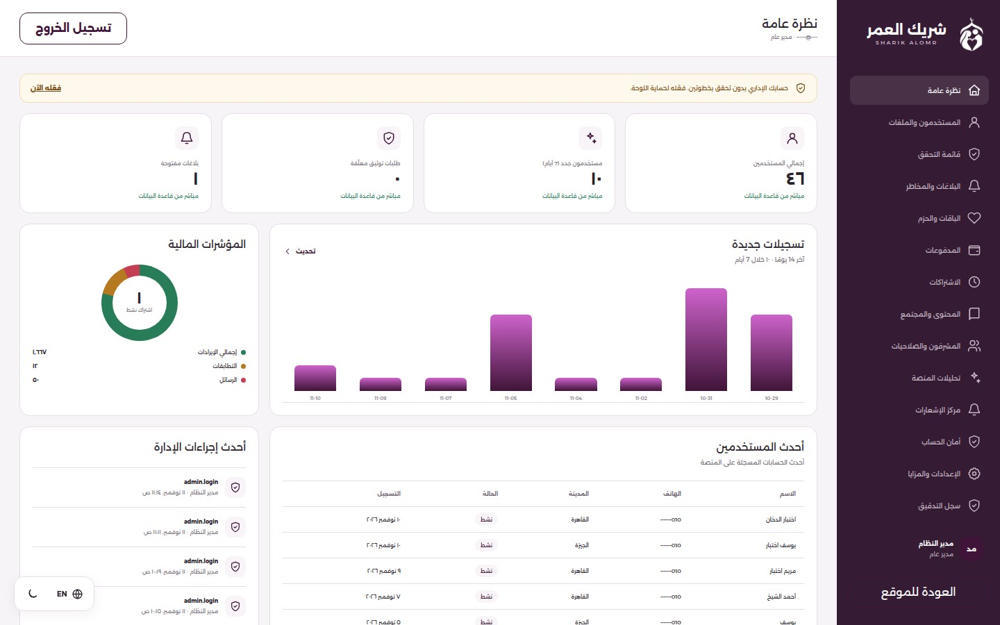
النظرة العامة — مؤشرات المنصة في شاشة واحدة.
المستخدمون
قائمة التحقق
البلاغات والمخاطر
الباقات والحزم
المدفوعات
الاشتراكات
المحتوى والمجتمع
المشرفون والصلاحيات
تحليلات المنصة
سجل التدقيق
صلاحيات دقيقة: كل أدمن بيشوف ويعمل بس اللي مسموح له بيه.
مش كل المشرفين لهم نفس الصلاحيات.
شريك العمرSHARIK ALOMR
الجودة
متابعة يومية
إدارة المستخدمين والجودة
كل مستخدم له ملف كامل، وكل إجراء متسجل — عشان الجودة تبقى
قابلة للمراجعة، مش مجرد وعود.
sharik-alomr.com/dashboard/admin — المستخدمون
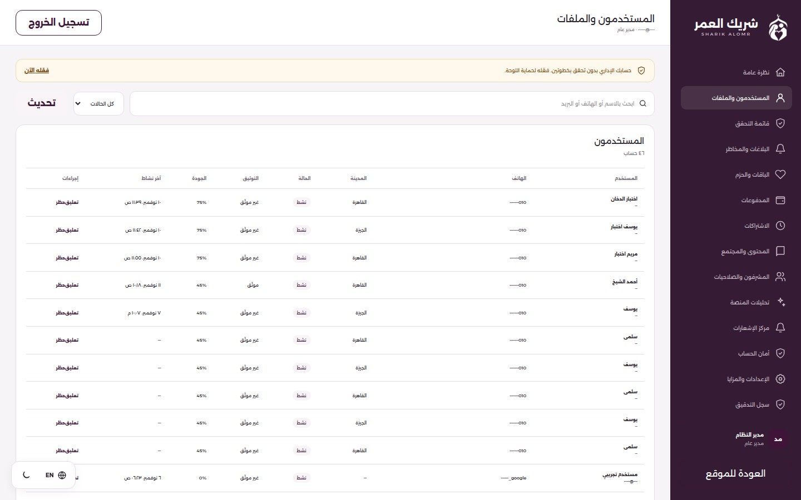
المستخدمون والملفات — بحث وفلترة وملف كامل لكل مستخدم.
بحث وفلترة
الوصول السريع لأي مستخدم بالاسم أو الرقم أو الحالة.
ملف المستخدم
البيانات، حالة الحساب، ونسبة اكتمال الملف.
قائمة التحقق
مراجعة طلبات التوثيق والموافقة عليها أو رفضها.
البلاغات والمخاطر
متابعة البلاغات واتخاذ إجراء واضح ومتسجل.
سجل التدقيق: كل إجراء إداري متسجل — مين عمله، وإمتى،
وليه. ده بيحمي المنصة والمستخدمين.
شريك العمرSHARIK ALOMR
الإدارة المالية
كل شيء تحت السيطرة
الباقات والمدفوعات
تعديل الأسعار، متابعة المدفوعات، وإدارة الاشتراكات — من مكان
واحد ومن غير تدخل تقني.
شاشة الباقات والحزم
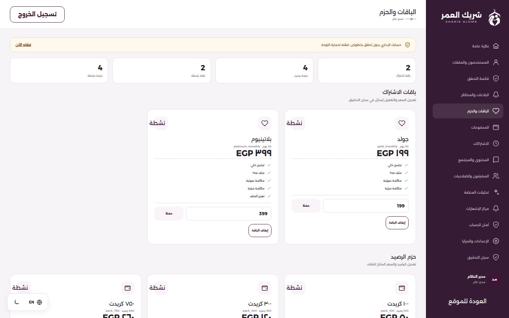
الباقات والحزم — تعديل السعر والمميزات والتفعيل.
شاشة المدفوعات
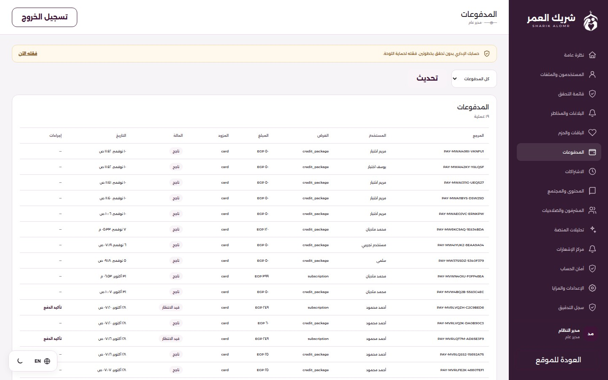
المدفوعات — متابعة العمليات والاشتراكات.
تعديل الأسعار: من غير نشر نسخة جديدة.
تفعيل وإيقاف: تحكم كامل في الحزم.
متابعة المدفوعات: كل عملية واضحة.
إدارة الاشتراكات: التجديد والإلغاء.
ملاحظة: البانر الأصفر في اللقطة تذكير أمني للأدمن إن
التحقق بخطوتين مش مفعّل — ميزة حماية، مش خطأ.
شريك العمرSHARIK ALOMR
التجربة
مرونة كاملة
تجربة تناسب كل مستخدم
نفس الموقع، بأربع طرق مختلفة: عربي أو إنجليزي، فاتح أو داكن،
وعلى موبايل أو كمبيوتر.
sharik-alomr.com — English
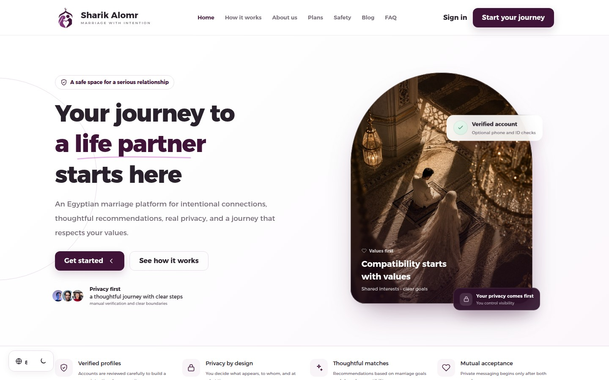
الإنجليزية — تبديل فوري بدون إعادة تحميل الصفحة.
لغة فورية: عربي ↔ إنجليزي بضغطة.
وضع داكن: مريح للعين وبيتحفظ.
تصميم متجاوب: موبايل، تابلت، وكمبيوتر.
نفس المحتوى: كل الميزات متاحة في كل وضع.
شريك العمرSHARIK ALOMR
ببساطة
من غير مصطلحات
كيف يعمل الموقع؟
ثلاث طبقات بس، وكل طبقة ليها دور واضح. المستخدم بيشوف الواجهة،
والطبقات التانية بتشتغل في الخلفية بأمان.
المتصفح
الواجهة اللي المستخدم بيشوفها ويتفاعل معاها
تطبيق الويب
Next.js — الصفحات والتجربة والتصميم
الوسيط الآمن
BFF — بيتحقق من الطلبات ويتكلم مع البيانات
قاعدة البيانات
PostgreSQL — مصدر واحد للحقيقة
ليه البنية دي مهمة للعميل؟
أمان أعلى
المتصفح مش بيتصل بقاعدة البيانات مباشرة — كل طلب بيعدي على مراجعة.
سرعة وتجربة أفضل
واجهة خفيفة بتعرض المحتوى بسرعة، حتى مع نمو البيانات.
قابلية التوسع
كل طبقة تقدر تكبر لوحدها من غير ما تعيد بناء الباقي.
مهم: الموقع بيقرأ من نفس قاعدة بيانات تطبيق الموبايل،
من غير أي تعديل في كود الموبايل.
Next.js 16
React 19
Express
Prisma
PostgreSQL
Docker
إزاي بنضمن إن الموقع شغال؟
تشغيل موحد
كل الخدمات بتشتغل في بيئة واحدة قابلة للتكرار بـ Docker.
فحص تلقائي
كل تعديل بيعدي على فحص وبناء واختبارات قبل النشر.
مراقبة
مؤشرات التشغيل والمراقبة جاهزة لمتابعة الأداء.
شريك العمرSHARIK ALOMR
الحماية
أساس التعامل
الأمان والخصوصية
الأمان مش ميزة إضافية — هو أساس التعامل. كل طبقة في المنصة
فيها حماية، وكل إجراء إداري متسجل.
دخول برمز OTP
رمز قصير العمر، ومحدود المحاولات، وبيتبعت للموبايل.
جلسات محمية
كوكيز آمنة، وصلاحية محددة، وخروج فوري عند الحاجة.
صلاحيات دقيقة
كل أدمن له صلاحيات محددة، مش وصول كامل لكل شيء.
تحقق بخطوتين
حماية إضافية لحسابات الإدارة الحساسة.
سجل تدقيق
كل إجراء إداري متسجل: مين، إمتى، وإيه.
حماية من التكرار
حدود على المحاولات والطلبات لمنع سوء الاستخدام.
خصوصية المستخدم
تحكم في الظهور: مين يشوف الملف وإيه.
إخفاء بيانات التواصل: لحد ما الطرفين يقبلوا.
إبلاغ وحظر: أدوات واضحة للحماية.
تعطيل الحساب: المستخدم يقدر يوقف حسابه.
الأسرار خارج الكود: المفاتيح وبيانات الاتصال متخزنة في
ملفات محمية، ومش مرفوعة على Git.
”
خصوصية المستخدم مش خيار في الإعدادات — هي جزء من التصميم.
شريك العمرSHARIK ALOMR
الخلاصة
آخر صفحة
فين وصلنا؟ وإيه الجاي؟
النسخة الحالية جاهزة، والاختبارات كلها ناجحة. فاضل خطوات
تفعيل بسيطة قبل الإطلاق الرسمي.
3 فحوصات CI خضراء بالكامل
عربي وإنجليزي وفاتح وداكن
الخطوات القادمة
بوابة الدفعتفعيل Stripe أو Paymob بمفاتيح الحساب.
الإشعاراتSMS وبريد إلكتروني وتنبيهات فورية.
تسجيل اجتماعيتفعيل Facebook وApple.
الإطلاقربط الدومين النهائي ومراجعة المحتوى.
شكرًا لثقتكم.
الدليل ده ملخص لكل ما تم بناؤه في نسخة الويب. أي ميزة جديدة
هتتضاف بنفس الأسلوب: شرح واضح، ولقطة حقيقية، ونتيجة ملموسة.
شريك العمر
زواج جاد بخطوات محترمة